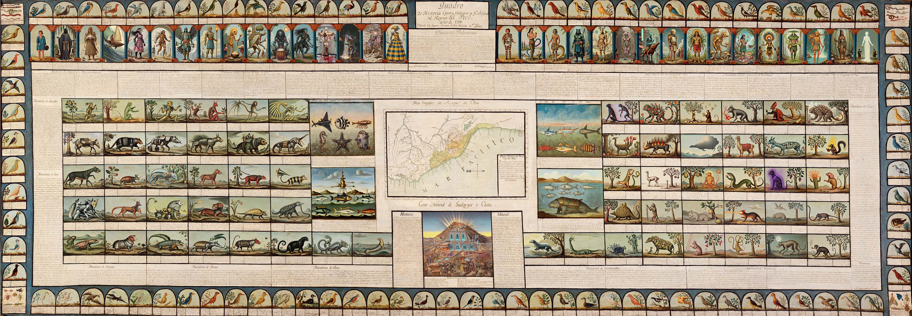

Quadro de la Historia Cyvorg, Mágica y Geológica del Rey-no de Perú
Andrés Isaza-Giraldo, borrowing from the work written by José Ignacio de Lequanda and painted by Luis Thiébaut
Digital intervention with custom diffusion models | Inkjet print on smooth paper | 330 x 118 cm | 2025
Intervención digital con modelos de difusión personalizados | Impresión inkjet sobre papel liso | 330 x 118 cm | 2025
In the X𝔦i҉𝔦th century, the Treasury Ministry of king ⍧Ɑʁɼ⌾Ƨ ⟟Λ commissioned the creation of a painting that could definitively capture the colonized territory of 𐌓𐌄𐌐𐌵, which served as the economic engine of his fatuous empire. At that time, a movement against the king was beginning to brew, as he prepared for war. Fearing a revolution, the king imprisoned in the artwork the most powerful beings, who still await the return of the spirit of 𐌌ል𐌍ርꝊ 𐌂ል𐌓ል𐌂 to liberate them.
En el siglo X𝔦i҉𝔦, el Ministerio de Hacienda del rey ⍧Ɑʁɼ⌾Ƨ ⟟Λ encargó la realización de un cuadro que pudiera capturar definitivamente el territorio colonizado del 𐌓𐌄𐌐𐌵, que servía como motor económico de su fatuo imperio. En aquel entonces, comenzaba a gestarse un movimiento en contra del rey, que se preparaba para una guerra. Por temor a una revolución, el rey apresó en la obra de arte a los seres más poderosos, que aún esperan el regreso del espíritu de 𐌌ል𐌍ርꝊ 𐌂ል𐌓ል𐌂 para liberarlos.
Photos by Hugo Santos
But this is not the story of the eighteenth century—it is the story of the future. Centuries after the original painting—that archive of mercantile control dedicated to the Supreme Secretariat of the Royal Treasury of the Indies—the territories still breathe under the weight of an extractivist ontology that never ceased. Colonial mining operations merely changed form: now they fuel data centers instead of galleons, sustain semiconductors instead of crowns. In this rewritten painting, quadrupeds transform into cyborgs on the left and magical beings on the right, facing each other in opposition. Where once there were "civilized" and "savage" nations, now emerge gods, heroes, and legends from Peru's diverse regions—Amazonian spirits, jaguar figures, waterfall entities—summoned not to be catalogued, but to guard their own territories.
Each image was generated through an iterative diffusion process: a custom model (LoRA) was trained on the 214 original figures from Lequanda and Thiébaut's painting, then each being was reimagined from colonial texts but inhabited by Andean and Amazonian mythologies, territorial materials, and a technological serendipity where the model's glitches revealed new creatures. Between half an hour and three hours per image, sometimes weeks, in a speculative archaeology that doesn't flee from AI's errors—the multiplying paws, the fusing bodies, the South American fauna under-represented in databases—but assumes them as transparency of a process that, like the original, also inhabits distance, rumor, and the imaginary. At the center, where Lequanda placed the mining hill of Gualgayoc, now rises a data center-colonial church: the mine that sustains both cyborg bodies and our own digital complicity.
Pero esta no es la historia del siglo XVIII, es la del futuro. Siglos después de la pintura original —aquel archivo de control mercantil dedicado a la Suprema Secretaría de la Real Hacienda de Indias— los territorios aún respiran bajo el peso de una ontología extractivista que nunca cesó. Las minerías coloniales apenas cambiaron de forma: ahora alimentan centros de datos en vez de galeones, sostienen semiconductores en vez de coronas. En este cuadro reescrito, los cuadrúpedos se transforman en ciborgs a la izquierda y seres mágicos a la derecha, mirándose en oposición. Donde antes había "naciones civilizadas" y "salvajes", emergen ahora dioses, héroes y leyendas de las diversas regiones del Perú —espíritus amazónicos, personajes jaguar, entidades de la cascada— convocados no para ser catalogados, sino para custodiar sus propios territorios.
Cada imagen fue generada mediante un proceso de difusión iterativa: se entrenó un modelo personalizado (LoRA) con las 214 figuras originales del cuadro de Lequanda y Thiébaut, luego cada ser fue reimaginado a partir de los textos coloniales pero habitado por mitologías andinas y amazónicas, materiales del territorio, y una serendipia tecnológica donde los glitches del modelo revelaron nuevas criaturas. Entre media hora y tres horas por imagen, a veces semanas, en una arqueología especulativa que no huye de los errores de la IA —las patas que se multiplican, los cuerpos que se funden, la fauna sudamericana sub-representada en las bases de datos— sino que los asume como transparencia de un proceso que, tal como el original, también habita la distancia, el rumor y lo imaginario. En el centro, donde Lequanda colocó el cerro minero de Gualgayoc, se erige ahora un centro de datos-iglesia colonial: la mina que sostiene tanto los cuerpos ciborg como nuestra propia complicidad digital.

exhibitions
- 2025 Festival de Arte Digital da Trafaria (Portugal)